All of the student work shown was done in the fall of 2013. My skills in Photoshop and Illustrator progressed with each project that was completed. I learned about opacity, blends, making 3D objects, and digital design.
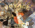 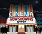 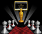 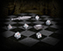 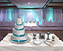Computer Art Digital Artist Video
The photography projects shown here were done using Photoshop and Lightroom in the spring of 2014. For these projects the skill focus was on concept, composition, design, angles, and photo editing.
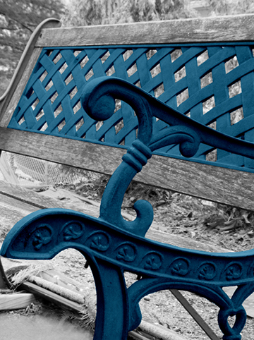 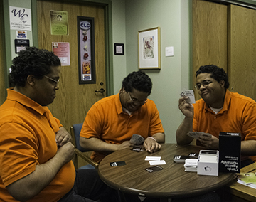 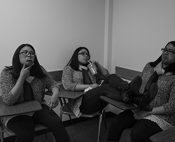 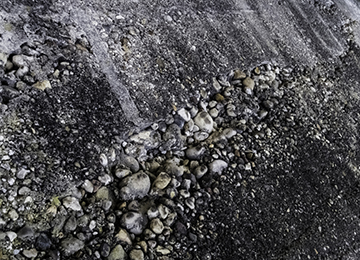 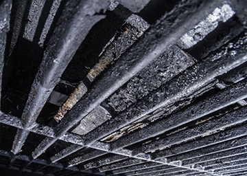 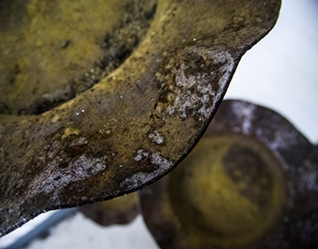The student work shown here were done using Flash, Illustrator, and Premiere in the spring of 2014. The focus was on storyboards, timing, concept, story, character creation, sketching, frame by frame animation, using tweens, sequencing, and stop-motion animation.
The student work that is shown here was done using Photoshop and InDesign in the spring of 2014. The skill focus was placed on designing for print, print colors, typography, crop marks, print layouts, business card designs, poster design, postcard design, 10-up layout, cd cover design, and advertisement design.
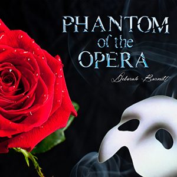 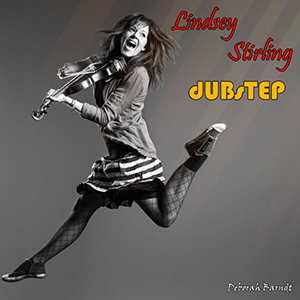 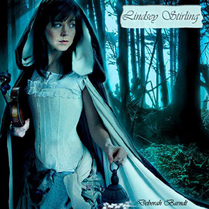 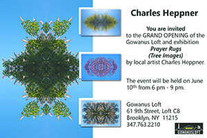 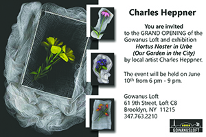 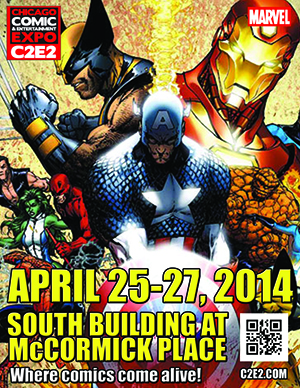All the web design work shown here was done using various different programs and coding such as: HTML, WordPress, Flash, and Dreamweaver. I am also a current freelance web designer for Tower of the Gilded Machine and for 2 Fancie Gals.
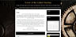 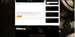 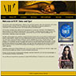 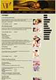 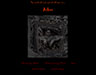 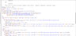 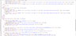Copyright © 2017 Geekbit Creations